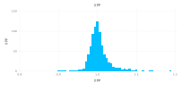
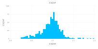

Testing Matrix Correction Algorithms
Testing matrix correction algorithms XPP and CitZAF against the Pouchou and Pichoir k-ratio database.
using CSV
using DataFrames
using NeXLMatrixCorrection
function mapline(elm, index)
trss = Dict(0=>kalpha, 2=>kbeta, 12=>lalpha, 31=>lbeta, 72=>malpha, 69=>mbeta)
trs=trss[index]
return [ brightest(characteristic(elm, trs)) ]
end
pap = DataFrame!(CSV.File("papkratios.csv", header=3, skipto=4))
xppres, czres = Union{Float64,Missing}[], Union{Float64,Missing}[]
for r in eachrow(pap)
try
a, b = elements[r.A], elements[r.B]
e0, θ = 1.0e3*r.E0, deg2rad(r.TOA)
std, unk = pure(a), material("Unknown",Dict(a=>r.WgtFracA, b=>1.0-r.WgtFracA))
kk, lines = r.kA, mapline(a, r.Line)
algs = zafcorrection(XPP, ReedFluorescence, NullCoating, unk, std, lines, e0)
push!(xppres, k(algs..., θ, θ)/kk)
algs = zafcorrection(CitZAF, ReedFluorescence, NullCoating, unk, std, lines, e0)
push!(czres, k(algs..., θ, θ)/kk)
catch
push!(xppres, missing)
push!(czres, missing)
end
end
insertcols!(pap, ncol(pap)+1, :XPP=>xppres)
insertcols!(pap, ncol(pap)+1, :CitZAF=>czres)
display(pap)826×9 DataFrame
│ Row │ A │ Line │ B │ E0 │ WgtFracA │ kA │ TOA │ XP
P │ CitZAF │
│ │ Int64 │ Int64 │ Int64 │ Float64 │ Float64 │ Float64 │ Float64 │ Fl
oat64? │ Float64? │
├─────┼───────┼───────┼───────┼─────────┼──────────┼─────────┼─────────┼───
───────┼──────────┤
│ 1 │ 13 │ 0 │ 26 │ 20.0 │ 0.241 │ 0.124 │ 52.5 │ 1.
05918 │ 0.901026 │
│ 2 │ 13 │ 0 │ 26 │ 25.0 │ 0.241 │ 0.098 │ 52.5 │ 1.
07042 │ 0.924951 │
│ 3 │ 13 │ 0 │ 26 │ 30.0 │ 0.241 │ 0.083 │ 52.5 │ 1.
02594 │ 0.914386 │
│ 4 │ 26 │ 0 │ 13 │ 20.0 │ 0.759 │ 0.736 │ 52.5 │ 0.
996823 │ 1.00185 │
│ 5 │ 26 │ 0 │ 13 │ 25.0 │ 0.759 │ 0.742 │ 52.5 │ 0.
990216 │ 0.990101 │
│ 6 │ 26 │ 0 │ 13 │ 30.0 │ 0.759 │ 0.748 │ 52.5 │ 0.
982697 │ 0.978262 │
│ 7 │ 26 │ 0 │ 16 │ 10.0 │ 0.466 │ 0.406 │ 75.0 │ 1.
04115 │ 1.07304 │
⋮
│ 819 │ 42 │ 12 │ 7 │ 6.0 │ 0.942 │ 0.9023 │ 40.0 │ 1.
01017 │ 1.03023 │
│ 820 │ 42 │ 12 │ 7 │ 8.0 │ 0.942 │ 0.9078 │ 40.0 │ 1.
0082 │ 1.02528 │
│ 821 │ 42 │ 12 │ 7 │ 10.0 │ 0.942 │ 0.9122 │ 40.0 │ 1.
00652 │ 1.02104 │
│ 822 │ 42 │ 12 │ 7 │ 12.0 │ 0.942 │ 0.9163 │ 40.0 │ 1.
00473 │ 1.01683 │
│ 823 │ 42 │ 12 │ 7 │ 15.0 │ 0.942 │ 0.922 │ 40.0 │ 1.
00209 │ 1.01059 │
│ 824 │ 42 │ 12 │ 7 │ 20.0 │ 0.942 │ 0.9268 │ 40.0 │ 1.
00213 │ 1.00443 │
│ 825 │ 42 │ 12 │ 7 │ 25.0 │ 0.942 │ 0.936 │ 40.0 │ 0.
996914 │ 0.992622 │
│ 826 │ 42 │ 12 │ 7 │ 30.0 │ 0.942 │ 0.9399 │ 40.0 │ 0.
996953 │ 0.985872 │XPP
Let's visualize this.
using Gadfly
plot(pap, x=:XPP, y=:XPP, Stat.histogram(bincount=50), Geom.bar, Guide.title("XPP"))
CitZAF
plot(pap, x=:CitZAF, y=:CitZAF, Stat.histogram(bincount=50), Geom.bar, Guide.title("CitZAF"))
Summary Statistics
describe(pap[:,end-1:end], :mean, :std, :min, :q25, :median, :q75, :max)2×8 DataFrame
│ Row │ variable │ mean │ std │ min │ q25 │ median │
q75 │ max │
│ │ Symbol │ Float64 │ Float64 │ Float64 │ Float64 │ Float64 │
Float64 │ Float64 │
├─────┼──────────┼──────────┼───────────┼──────────┼──────────┼──────────┼─
────────┼─────────┤
│ 1 │ XPP │ 1.00355 │ 0.0264633 │ 0.897411 │ 0.989226 │ 0.999223 │
1.0121 │ 1.19012 │
│ 2 │ CitZAF │ 0.990101 │ 0.0477465 │ 0.848773 │ 0.96709 │ 0.995988 │
1.01802 │ 1.19848 │